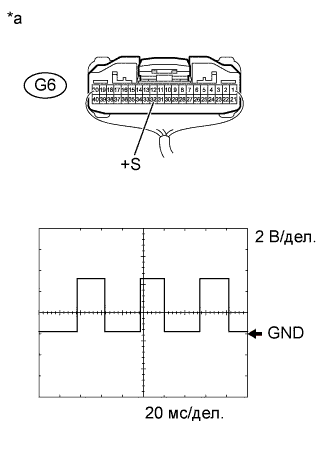

DTC P0500 Неисправность датчика скорости автомобиля |
| Код DTC | Условие обнаружения DTC | Неисправный участок |
| P0500 | Во время движения автомобиля в TCM не поступает сигнал датчика скорости автомобиля (логика диагностирования за 2 поездки). |
|
| 1.СНИМИТЕ ПОКАЗАНИЯ ПОРТАТИВНОГО ДИАГНОСТИЧЕСКОГО ПРИБОРА (VEHICLE SPEED) |
Совершите поездку на автомобиле и убедитесь, что спидометр на щитке приборов в сборе работает нормально.
Подсоедините портативный диагностический прибор к DLC3.
Включите зажигание (IG).
Включите портативный диагностический прибор.
Войдите в следующие меню: Powertrain / ECT / Data List.
Совершите поездку на автомобиле.
Считайте значение, отображенное на диагностическом приборе.
| Информация на дисплее прибора | Измеряемая величина / диапазон измерения | Нормальное состояние | Замечание по диагностике |
| Vehicle Speed | Скорость движения автомобиля / Мин.: 0 км/час (0 миль в час) Макс.: 255 км/час (158 миль в час) | Действительная скорость автомобиля | - |
| Результат | Следующий шаг |
| OK (для моделей с DPF) | А |
| OK (для моделей без DPF) | B |
| NG | C |
|
| ||||
|
| ||||
| А | ||
| ||
| 2.ПРОВЕРЬТЕ ЩИТОК ПРИБОРОВ (ФОРМА СИГНАЛА SPD) |
|  |
Снимите щиток приборов в сборе, не отсоединяя его разъем(ы).
Установите рычаг переключения передач в положение N.
Поддомкратьте автомобиль.
Включите зажигание (IG).
Проверьте форму сигнала в соответствии с условиями, указанными в таблице ниже.
| Номера контактов (обозначения) | Настройки прибора | Условие |
| G6-32 (+S) - масса | 2 В/дел., 20 мс/дел. | Скорость автомобиля – 20 км/час (12 миль в час) |
| *a | Устройство с подсоединенным жгутом проводов (щиток приборов в сборе) |
|
| ||||
| OK | |
| 3.ПРОВЕРЬТЕ ЖГУТ ПРОВОДОВ И РАЗЪЕМ (ЩИТОК ПРИБОРОВ В СБОРЕ – TCM) |
Отсоедините разъем G6 щитка приборов.
Отсоедините разъем G70 TCM.
Измерьте сопротивление в соответствии со значениями, приведенными в таблице ниже.
| Контакты для подключения диагностического прибора | Состояние | Заданные условия |
| G6-32 (+S) - G70-25 (SPD1) | Всегда | Менее 1 Ом |
| G6-32 (+S) или G70-25 (SPD1) - масса | Всегда | 10 кОм или более |
|
| ||||
| OK | ||
| ||